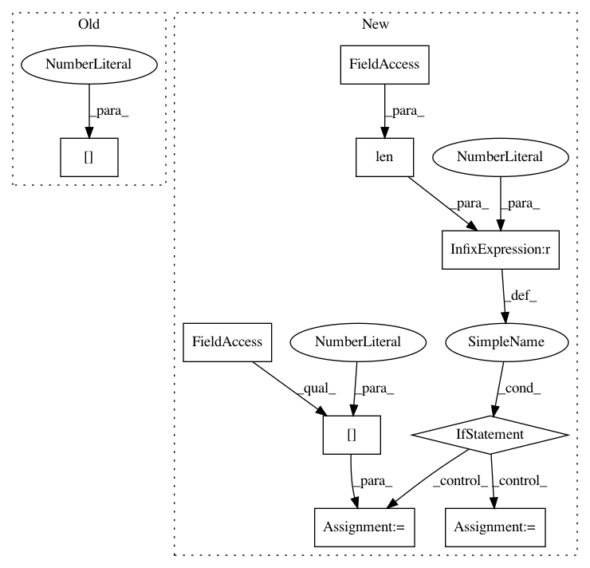

a4cd451b3ce3da6ae5a4d7a2ab18237b278c4dd3,cistar-dev/cistar/core/plotting.py,,,#,124
Before Change
// sugiyama_test_eugene-230m1l
// length is 230, automatically pulled out of filename
length = int(args[1][-6:-3])
edgelen = length/4
edgestarts = dict([("bottom", 0), ("right", edgelen), ("top", 2 * edgelen), ("left", 3 * edgelen)])
After Change
show = False if args[3] == "False" else True
save = False if args[4] == "False" else True
if len(args) > 5:
savename = args[5]
else:
savename = None
space_time_diagram(fname, edgestarts, show = show, save = save, savename = savename)
In pattern: SUPERPATTERN
Frequency: 3
Non-data size: 9
Instances
Project Name: flow-project/flow
Commit Name: a4cd451b3ce3da6ae5a4d7a2ab18237b278c4dd3
Time: 2017-04-27
Author: nishantkheterpal@gmail.com
File Name: cistar-dev/cistar/core/plotting.py
Class Name:
Method Name:
Project Name: rtavenar/tslearn
Commit Name: 090247d348349e170ed3644ceb99880fe57b442e
Time: 2017-05-04
Author: romain.tavenard@univ-rennes2.fr
File Name: tslearn/adaptation.py
Class Name: DTWSampler
Method Name: transform
Project Name: flow-project/flow
Commit Name: 6816dad9572a5bff003d81c9b504c90df310208e
Time: 2017-04-25
Author: nishantkheterpal@gmail.com
File Name: cistar-dev/cistar/core/plotting.py
Class Name:
Method Name: